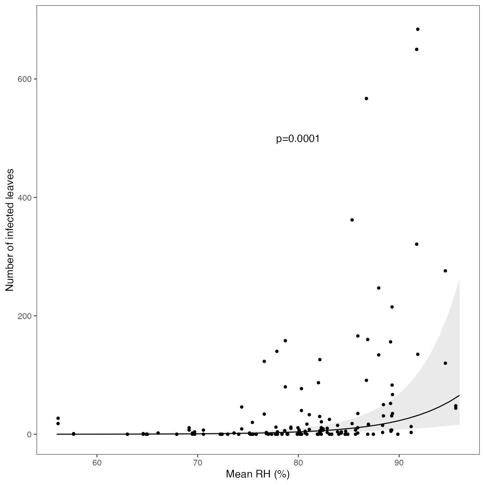
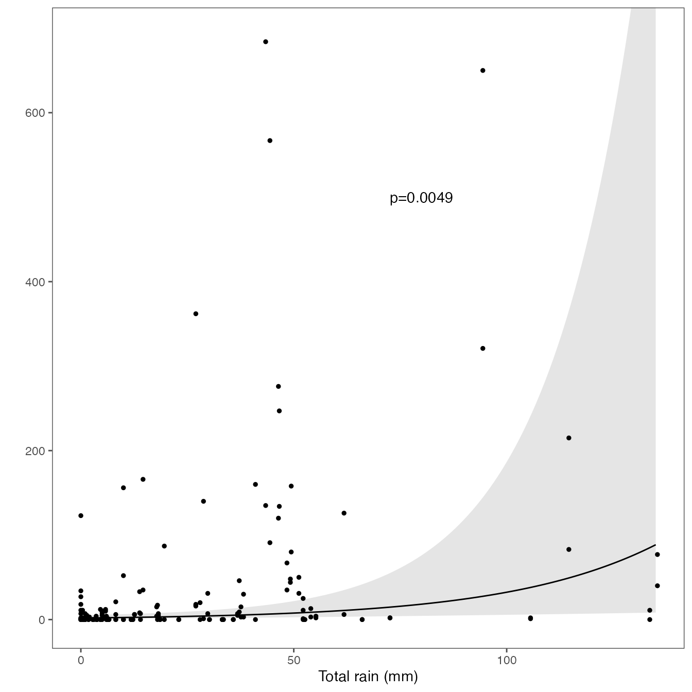
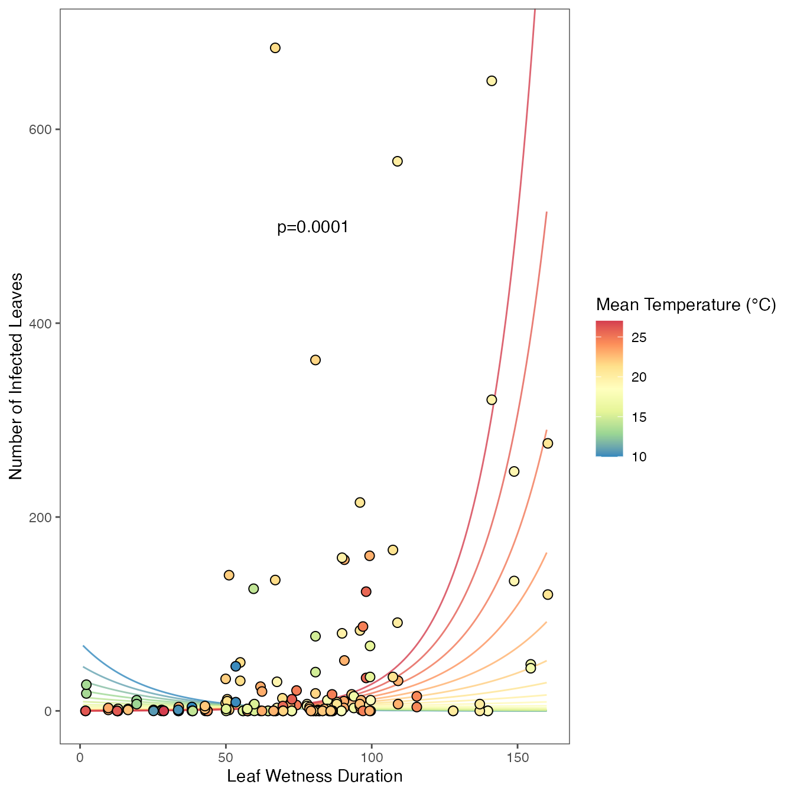

Load libraries
library("readxl")
library("tidyverse")
library("dplyr")
library("ggeffects")
library("here")
library("glmmTMB")
library("lubridate")
library("ggpubr")
library("kableExtra")
library("DHARMa")
library("SDMTools")
library("ggthemes")
library("patchwork")
library("epiboxwoodblight")Import disease data
Import disease data
disease_dat <- read_excel(system.file(
"extdata",
"NC_disease_data.xlsx",
package = "epiboxwoodblight",
mustWork = TRUE
)) %>%
dplyr::mutate(year = as.factor(year)) %>%
dplyr::mutate(location = as.factor(location)) %>%
dplyr::mutate(spread_event = as.factor(spread_event)) %>%
dplyr::mutate(replicate = as.factor(replicate)) %>%
dplyr::mutate(treatment = as.factor(treatment)) %>%
dplyr::mutate(total_count = as.integer(total_count)) %>%
dplyr::mutate(month = as.factor(months(date_in))) %>%
dplyr::mutate(spev_duration = as.integer(difftime(date_out, date_in))) %>%
relocate(month, .after = date_out) %>%
na.omit() %>%
group_by(
year,
location,
spread_event,
month,
treatment,
date_in,
date_out,
cultivar,
spev_duration
) %>%
summarise(total_count = sum(total_count))
#openxlsx::write.xlsx(disease_dat, "Table S1.xlsx", rowNames=FALSE)Import weather data
# Filter rainy periods to calculate average wind speed, wind direction & temperature wet period
weather_dat_rain <- read_excel(system.file(
"extdata",
"NC_weather_data.xlsx",
package = "epiboxwoodblight",
mustWork = TRUE
)) %>%
select(year,
wind_speed,
wind_direction,
temperature,
precipitation,
location,
spread_event) %>%
dplyr::mutate(year = as.factor(year)) %>%
dplyr::mutate(location = as.factor(location)) %>%
dplyr::mutate(spread_event = as.factor(spread_event)) %>%
dplyr::mutate(rain_duration = as.integer(precipitation > 0)) %>%
filter(precipitation > 0) %>%
group_by(year, location, spread_event) %>%
summarise(
total_rain = round(sum(precipitation), 5),
mean_ws = round(mean(wind_speed), 2),
rain_duration = round(sum(rain_duration * 15 / 60), 2),
mean_wd = round(circular.averaging(wind_direction), 2),
mean_temp = round(mean(temperature), 2)
)
# Filter rainless periods to calculate mean RH
weather_dat_no_rain <-
read_excel(system.file(
"extdata",
"NC_weather_data.xlsx",
package = "epiboxwoodblight",
mustWork = TRUE
)) %>%
select(
year,
relative_humidity,
leaf_wetness_duration,
precipitation,
location,
spread_event,
date
) %>%
dplyr::mutate(year = as.factor(year)) %>%
dplyr::mutate(location = as.factor(location)) %>%
dplyr::mutate(spread_event = as.factor(spread_event)) %>%
filter(precipitation == 0) %>%
group_by(year, location, spread_event) %>%
summarise(mean_rh = round(mean(relative_humidity * 100), 2))
# Combine data
weather_dat_comb <-
left_join(weather_dat_rain,
weather_dat_no_rain,
by = c("year", "location", "spread_event"))
# Leaf wetness duration both inside and outside rainy periods
weather_wet <- read_excel(system.file(
"extdata",
"NC_weather_data.xlsx",
package = "epiboxwoodblight",
mustWork = TRUE
)) %>%
dplyr::mutate(year = as.factor(year)) %>%
dplyr::mutate(location = as.factor(location)) %>%
dplyr::mutate(spread_event = as.factor(spread_event)) %>%
group_by(year, location, spread_event) %>%
summarise(lwd_duration = round(sum(leaf_wetness_duration / 60), 2))
weather_dat <-
left_join(weather_dat_comb,
weather_wet,
by = c("year", "location", "spread_event"))
# Divide week 1 of 2014 rain/rain duration/wetness duration by 4 & that of week 2 & 3 by 3 to convert to per week data because the duration of spread event was 4 and 3 weeks, respectively.
weather_dat <- weather_dat %>%
mutate(
total_rain = ifelse(
year == "2017" & spread_event == "1",
total_rain / 4,
ifelse(
year == "2017" &
spread_event %in% c("2", "3"),
total_rain / 3,
total_rain
)
),
rain_duration = ifelse(
year == "2017" & spread_event == "1",
rain_duration / 4,
ifelse(
year == "2017" &
spread_event %in% c("2", "3"),
rain_duration / 3,
rain_duration
)
),
lwd_duration = ifelse(
year == "2017" & spread_event == "1",
lwd_duration / 4,
ifelse(
year == "2017" &
spread_event %in% c("2", "3"),
lwd_duration / 3,
lwd_duration
)
)
)Cobmine weather & disease data
Combine weather and disease data
dat_NC <-
left_join(disease_dat,
weather_dat,
by = c("year", "location", "spread_event")) %>%
# Replace NA with zero because NA are introduced due to data munging. Original values were zero
dplyr::mutate(total_rain = replace_na(total_rain, 0)) %>%
dplyr::mutate(rain_duration = replace_na(rain_duration, 0))
# Since we filtered data separately for precipitation and then without precipitation, NAs are introduced. In this step, data (in which values were added manually) is imported
dat_missing <- read_excel(system.file(
"extdata",
"NC_missing_data.xlsx",
package = "epiboxwoodblight",
mustWork = TRUE
)) %>%
dplyr::mutate(year = as.factor(year)) %>%
dplyr::mutate(location = as.factor(location)) %>%
dplyr::mutate(spread_event = as.factor(spread_event))
# Combine data to replace NA values with distinct data
dat_nc <-
left_join(dat_NC, dat_missing, by = c("year", "location", "spread_event")) %>%
mutate(mean_ws = coalesce(mean_ws.x, mean_ws.y)) %>%
select(-mean_ws.x, -mean_ws.y) %>%
mutate(mean_temp = coalesce(mean_temp.x, mean_temp.y)) %>%
select(-mean_temp.x, -mean_temp.y) %>%
mutate(mean_rh = coalesce(mean_rh.x, mean_rh.y)) %>%
select(-mean_rh.x, -mean_rh.y) %>%
mutate(mean_wd = coalesce(mean_wd.x, mean_wd.y)) %>%
select(-mean_wd.x, -mean_wd.y) %>%
mutate(lwd_duration = coalesce(lwd_duration.x, lwd_duration.y)) %>%
select(-lwd_duration.x, -lwd_duration.y) %>%
distinct()## Warning in left_join(dat_NC, dat_missing, by = c("year", "location", "spread_event")): Detected an unexpected many-to-many relationship between `x` and `y`.
## ℹ Row 50 of `x` matches multiple rows in `y`.
## ℹ Row 1 of `y` matches multiple rows in `x`.
## ℹ If a many-to-many relationship is expected, set `relationship =
## "many-to-many"` to silence this warning.
dat_nc <- dat_nc %>%
mutate(daily_rain = round(total_rain/spev_duration, 2),
daily_lwd = round(lwd_duration/spev_duration, 2))
# Filter out mulch treatment. Use non-mulch and CP only.
dat_nc_ncb <- dat_nc %>%
filter(treatment != "mulch", treatment != "between_row") # filter non-mulch, CP and between row treatments data
# Data considering only CP treatment
dat_cp <- dat_nc %>%
filter(treatment == "CP")
# Data considering only leaf debris treatment
dat_ld <- dat_nc %>%
filter(treatment == "non_mulch")
# Data considering only between row treatment
dat_br <- dat_nc %>%
filter(treatment == "between_row")
# Data for Lambsburg site only
dat_lambsburg <- dat_nc %>%
filter(location == "Lambsburg") %>%
filter(treatment != "mulch", treatment != "between_row")Check data
kable(dat_nc_ncb,
format = "html",
table.attr = "class='table table-hover'")| year | location | spread_event | month | treatment | date_in | date_out | cultivar | spev_duration | total_count | total_rain | rain_duration | mean_ws | mean_temp | mean_rh | mean_wd | lwd_duration | daily_rain | daily_lwd |
|---|---|---|---|---|---|---|---|---|---|---|---|---|---|---|---|---|---|---|
| 2014 | Lambsburg | 1 | May | CP | 2014-05-26 | 2014-06-02 | Suffruticosa | 7 | 0 | 6.20000 | 3.25000 | 0.26 | 20.59 | 80.14 | 110.16 | 42.98000 | 0.89 | 6.14 |
| 2014 | Lambsburg | 2 | June | CP | 2014-06-09 | 2014-06-16 | Suffruticosa | 7 | 0 | 6.60000 | 3.25000 | 0.28 | 20.78 | 79.89 | 233.53 | 57.58000 | 0.94 | 8.23 |
| 2014 | Lambsburg | 2 | June | non_mulch | 2014-06-09 | 2014-06-16 | Suffruticosa | 7 | 0 | 6.60000 | 3.25000 | 0.28 | 20.78 | 79.89 | 233.53 | 57.58000 | 0.94 | 8.23 |
| 2014 | Lambsburg | 3 | June | CP | 2014-06-16 | 2014-06-23 | Suffruticosa | 7 | 0 | 6.00000 | 1.50000 | 0.40 | 22.23 | 77.92 | 118.47 | 33.83000 | 0.86 | 4.83 |
| 2014 | Lambsburg | 3 | June | non_mulch | 2014-06-16 | 2014-06-23 | Suffruticosa | 7 | 4 | 6.00000 | 1.50000 | 0.40 | 22.23 | 77.92 | 118.47 | 33.83000 | 0.86 | 4.83 |
| 2014 | Lambsburg | 4 | June | CP | 2014-06-23 | 2014-06-30 | Suffruticosa | 7 | 3 | 54.00000 | 7.75000 | 0.26 | 19.71 | 91.19 | 104.58 | 69.38000 | 7.71 | 9.91 |
| 2014 | Lambsburg | 4 | June | non_mulch | 2014-06-23 | 2014-06-30 | Suffruticosa | 7 | 13 | 54.00000 | 7.75000 | 0.26 | 19.71 | 91.19 | 104.58 | 69.38000 | 7.71 | 9.91 |
| 2014 | Lambsburg | 5 | June | CP | 2014-06-30 | 2014-07-07 | Suffruticosa | 7 | 0 | 0.60000 | 0.25000 | 0.40 | 26.20 | 77.35 | 85.00 | 1.87000 | 0.09 | 0.27 |
| 2014 | Lambsburg | 5 | June | non_mulch | 2014-06-30 | 2014-07-07 | Suffruticosa | 7 | 0 | 0.60000 | 0.25000 | 0.40 | 26.20 | 77.35 | 85.00 | 1.87000 | 0.09 | 0.27 |
| 2014 | Lambsburg | 6 | July | CP | 2014-07-07 | 2014-07-14 | Suffruticosa | 7 | 16 | 27.00000 | 3.75000 | 0.19 | 20.49 | 86.95 | 211.68 | 93.13000 | 3.86 | 13.30 |
| 2014 | Lambsburg | 6 | July | non_mulch | 2014-07-07 | 2014-07-14 | Suffruticosa | 7 | 17 | 27.00000 | 3.75000 | 0.19 | 20.49 | 86.95 | 211.68 | 93.13000 | 3.86 | 13.30 |
| 2014 | Lambsburg | 7 | July | CP | 2014-07-14 | 2014-07-21 | Suffruticosa | 7 | 0 | 3.00000 | 2.75000 | 0.11 | 18.87 | 80.31 | 302.73 | 67.03000 | 0.43 | 9.58 |
| 2014 | Lambsburg | 7 | July | non_mulch | 2014-07-14 | 2014-07-21 | Suffruticosa | 7 | 0 | 3.00000 | 2.75000 | 0.11 | 18.87 | 80.31 | 302.73 | 67.03000 | 0.43 | 9.58 |
| 2014 | Lambsburg | 8 | July | CP | 2014-07-21 | 2014-07-28 | Suffruticosa | 7 | 7 | 29.80000 | 5.00000 | 0.31 | 21.85 | 89.26 | 65.58 | 109.03000 | 4.26 | 15.58 |
| 2014 | Lambsburg | 8 | July | non_mulch | 2014-07-21 | 2014-07-28 | Suffruticosa | 7 | 31 | 29.80000 | 5.00000 | 0.31 | 21.85 | 89.26 | 65.58 | 109.03000 | 4.26 | 15.58 |
| 2014 | Lambsburg | 9 | July | CP | 2014-07-28 | 2014-08-04 | Suffruticosa | 7 | 3 | 38.20000 | 14.00000 | 0.11 | 17.11 | 82.11 | 257.13 | 67.52000 | 5.46 | 9.65 |
| 2014 | Lambsburg | 9 | July | non_mulch | 2014-07-28 | 2014-08-04 | Suffruticosa | 7 | 30 | 38.20000 | 14.00000 | 0.11 | 17.11 | 82.11 | 257.13 | 67.52000 | 5.46 | 9.65 |
| 2014 | Lambsburg | 10 | August | CP | 2014-08-04 | 2014-08-11 | Suffruticosa | 7 | 83 | 114.60000 | 35.75000 | 0.23 | 18.82 | 89.30 | 24.30 | 95.98000 | 16.37 | 13.71 |
| 2014 | Lambsburg | 10 | August | non_mulch | 2014-08-04 | 2014-08-11 | Suffruticosa | 7 | 215 | 114.60000 | 35.75000 | 0.23 | 18.82 | 89.30 | 24.30 | 95.98000 | 16.37 | 13.71 |
| 2014 | Lambsburg | 11 | August | CP | 2014-08-11 | 2014-08-18 | Suffruticosa | 7 | 31 | 51.20000 | 17.00000 | 0.09 | 19.76 | 88.44 | 44.67 | 54.92000 | 7.31 | 7.85 |
| 2014 | Lambsburg | 11 | August | non_mulch | 2014-08-11 | 2014-08-18 | Suffruticosa | 7 | 50 | 51.20000 | 17.00000 | 0.09 | 19.76 | 88.44 | 44.67 | 54.92000 | 7.31 | 7.85 |
| 2014 | Lambsburg | 12 | September | CP | 2014-09-08 | 2014-09-15 | Suffruticosa | 7 | 276 | 46.40000 | 10.75000 | 0.14 | 18.88 | 94.59 | 263.90 | 160.38000 | 6.63 | 22.91 |
| 2014 | Lambsburg | 12 | September | non_mulch | 2014-09-08 | 2014-09-15 | Suffruticosa | 7 | 120 | 46.40000 | 10.75000 | 0.14 | 18.88 | 94.59 | 263.90 | 160.38000 | 6.63 | 22.91 |
| 2014 | Lambsburg | 13 | September | CP | 2014-09-15 | 2014-09-22 | Suffruticosa | 7 | 0 | 0.60000 | 0.50000 | 0.20 | 18.40 | 89.87 | 309.50 | 127.93000 | 0.09 | 18.28 |
| 2014 | Lambsburg | 13 | September | non_mulch | 2014-09-15 | 2014-09-22 | Suffruticosa | 7 | 0 | 0.60000 | 0.50000 | 0.20 | 18.40 | 89.87 | 309.50 | 127.93000 | 0.09 | 18.28 |
| 2014 | Lambsburg | 14 | September | CP | 2014-09-22 | 2014-09-29 | Suffruticosa | 7 | 0 | 2.80000 | 3.00000 | 0.07 | 16.12 | 87.44 | 266.64 | 139.80000 | 0.40 | 19.97 |
| 2014 | Lambsburg | 14 | September | non_mulch | 2014-09-22 | 2014-09-29 | Suffruticosa | 7 | 0 | 2.80000 | 3.00000 | 0.07 | 16.12 | 87.44 | 266.64 | 139.80000 | 0.40 | 19.97 |
| 2014 | Lambsburg | 15 | September | CP | 2014-09-29 | 2014-10-06 | Suffruticosa | 7 | 0 | 14.00000 | 5.25000 | 0.14 | 18.26 | 85.67 | 226.82 | 137.05000 | 2.00 | 19.58 |
| 2014 | Lambsburg | 15 | September | non_mulch | 2014-09-29 | 2014-10-06 | Suffruticosa | 7 | 7 | 14.00000 | 5.25000 | 0.14 | 18.26 | 85.67 | 226.82 | 137.05000 | 2.00 | 19.58 |
| 2014 | Lambsburg | 16 | October | CP | 2014-10-06 | 2014-10-13 | Suffruticosa | 7 | 48 | 49.20000 | 25.00000 | 0.16 | 14.14 | 95.62 | 62.53 | 154.52000 | 7.03 | 22.07 |
| 2014 | Lambsburg | 16 | October | non_mulch | 2014-10-06 | 2014-10-13 | Suffruticosa | 7 | 44 | 49.20000 | 25.00000 | 0.16 | 14.14 | 95.62 | 62.53 | 154.52000 | 7.03 | 22.07 |
| 2014 | Lambsburg | 17 | October | CP | 2014-10-13 | 2014-10-20 | Suffruticosa | 7 | 247 | 46.60000 | 9.50000 | 0.52 | 16.82 | 87.97 | 235.50 | 148.83000 | 6.66 | 21.26 |
| 2014 | Lambsburg | 17 | October | non_mulch | 2014-10-13 | 2014-10-20 | Suffruticosa | 7 | 134 | 46.60000 | 9.50000 | 0.52 | 16.82 | 87.97 | 235.50 | 148.83000 | 6.66 | 21.26 |
| 2014 | Lambsburg | 18 | October | CP | 2014-10-20 | 2014-10-27 | Suffruticosa | 7 | 0 | 0.00000 | 0.00000 | 0.82 | 12.73 | 65.00 | 69.17 | 13.00000 | 0.00 | 1.86 |
| 2014 | Lambsburg | 18 | October | non_mulch | 2014-10-20 | 2014-10-27 | Suffruticosa | 7 | 0 | 0.00000 | 0.00000 | 0.82 | 12.73 | 65.00 | 69.17 | 13.00000 | 0.00 | 1.86 |
| 2014 | Lambsburg | 19 | October | CP | 2014-10-27 | 2014-11-03 | Suffruticosa | 7 | 0 | 12.20000 | 10.00000 | 0.94 | 4.72 | 67.92 | 91.25 | 85.38000 | 1.74 | 12.20 |
| 2014 | Lambsburg | 19 | October | non_mulch | 2014-10-27 | 2014-11-03 | Suffruticosa | 7 | 0 | 12.20000 | 10.00000 | 0.94 | 4.72 | 67.92 | 91.25 | 85.38000 | 1.74 | 12.20 |
| 2014 | Lambsburg | 20 | November | CP | 2014-11-03 | 2014-11-10 | Suffruticosa | 7 | 0 | 1.80000 | 1.25000 | 0.50 | 11.66 | 64.90 | 299.99 | 55.88000 | 0.26 | 7.98 |
| 2014 | Lambsburg | 20 | November | non_mulch | 2014-11-03 | 2014-11-10 | Suffruticosa | 7 | 0 | 1.80000 | 1.25000 | 0.50 | 11.66 | 64.90 | 299.99 | 55.88000 | 0.26 | 7.98 |
| 2015 | Lowgap | 1 | May | CP | 2015-05-19 | 2015-05-26 | JustinBrouwers | 7 | 2 | 1.00000 | 1.25000 | 0.02 | 16.30 | 66.07 | 0.02 | 13.02000 | 0.14 | 1.86 |
| 2015 | Lowgap | 1 | May | non_mulch | 2015-05-19 | 2015-05-26 | JustinBrouwers | 7 | 2 | 1.00000 | 1.25000 | 0.02 | 16.30 | 66.07 | 0.02 | 13.02000 | 0.14 | 1.86 |
| 2015 | Lowgap | 2 | May | CP | 2015-05-26 | 2015-06-02 | JustinBrouwers | 7 | 18 | 27.00000 | 6.25000 | 0.18 | 20.16 | 85.33 | 326.02 | 80.72000 | 3.86 | 11.53 |
| 2015 | Lowgap | 2 | May | non_mulch | 2015-05-26 | 2015-06-02 | JustinBrouwers | 7 | 362 | 27.00000 | 6.25000 | 0.18 | 20.16 | 85.33 | 326.02 | 80.72000 | 3.86 | 11.53 |
| 2015 | Lowgap | 3 | June | CP | 2015-06-02 | 2015-06-09 | JustinBrouwers | 7 | 135 | 43.40000 | 11.75000 | 0.09 | 19.85 | 91.85 | 20.26 | 66.92000 | 6.20 | 9.56 |
| 2015 | Lowgap | 3 | June | non_mulch | 2015-06-02 | 2015-06-09 | JustinBrouwers | 7 | 684 | 43.40000 | 11.75000 | 0.09 | 19.85 | 91.85 | 20.26 | 66.92000 | 6.20 | 9.56 |
| 2015 | Lowgap | 4 | June | CP | 2015-06-09 | 2015-06-16 | JustinBrouwers | 7 | 34 | 0.00000 | 0.00000 | 0.25 | 25.45 | 76.61 | 0.47 | 98.08000 | 0.00 | 14.01 |
| 2015 | Lowgap | 4 | June | non_mulch | 2015-06-09 | 2015-06-16 | JustinBrouwers | 7 | 123 | 0.00000 | 0.00000 | 0.25 | 25.45 | 76.61 | 0.47 | 98.08000 | 0.00 | 14.01 |
| 2015 | Lowgap | 5 | June | CP | 2015-06-16 | 2015-06-23 | JustinBrouwers | 7 | 21 | 8.20000 | 3.50000 | 0.46 | 24.32 | 82.28 | 306.14 | 74.22000 | 1.17 | 10.60 |
| 2015 | Lowgap | 5 | June | non_mulch | 2015-06-16 | 2015-06-23 | JustinBrouwers | 7 | 6 | 8.20000 | 3.50000 | 0.46 | 24.32 | 82.28 | 306.14 | 74.22000 | 1.17 | 10.60 |
| 2015 | Lowgap | 6 | June | CP | 2015-06-23 | 2015-06-30 | JustinBrouwers | 7 | 1 | 2.00000 | 1.75000 | 0.07 | 22.21 | 76.82 | 342.84 | 9.68000 | 0.29 | 1.38 |
| 2015 | Lowgap | 6 | June | non_mulch | 2015-06-23 | 2015-06-30 | JustinBrouwers | 7 | 3 | 2.00000 | 1.75000 | 0.07 | 22.21 | 76.82 | 342.84 | 9.68000 | 0.29 | 1.38 |
| 2015 | Lowgap | 7 | June | CP | 2015-06-30 | 2015-07-07 | JustinBrouwers | 7 | 156 | 10.00000 | 6.00000 | 0.09 | 21.83 | 89.15 | 320.23 | 90.62000 | 1.43 | 12.95 |
| 2015 | Lowgap | 7 | June | non_mulch | 2015-06-30 | 2015-07-07 | JustinBrouwers | 7 | 52 | 10.00000 | 6.00000 | 0.09 | 21.83 | 89.15 | 320.23 | 90.62000 | 1.43 | 12.95 |
| 2015 | Lowgap | 8 | July | CP | 2015-07-07 | 2015-07-14 | JustinBrouwers | 7 | 1 | 6.40000 | 5.00000 | 0.72 | 19.99 | 78.89 | 259.55 | 27.95000 | 0.91 | 3.99 |
| 2015 | Lowgap | 8 | July | non_mulch | 2015-07-07 | 2015-07-14 | JustinBrouwers | 7 | 0 | 6.40000 | 5.00000 | 0.72 | 19.99 | 78.89 | 259.55 | 27.95000 | 0.91 | 3.99 |
| 2015 | Lowgap | 9 | July | CP | 2015-07-14 | 2015-07-21 | JustinBrouwers | 7 | 0 | 0.80000 | 0.75000 | 0.64 | 26.07 | 77.02 | 285.79 | 12.73000 | 0.11 | 1.82 |
| 2015 | Lowgap | 9 | July | non_mulch | 2015-07-14 | 2015-07-21 | JustinBrouwers | 7 | 0 | 0.80000 | 0.75000 | 0.64 | 26.07 | 77.02 | 285.79 | 12.73000 | 0.11 | 1.82 |
| 2015 | Lowgap | 10 | July | CP | 2015-07-21 | 2015-07-28 | JustinBrouwers | 7 | 0 | 18.60000 | 2.25000 | 0.37 | 23.21 | 83.30 | 258.63 | 43.67000 | 2.66 | 6.24 |
| 2015 | Lowgap | 10 | July | non_mulch | 2015-07-21 | 2015-07-28 | JustinBrouwers | 7 | 0 | 18.60000 | 2.25000 | 0.37 | 23.21 | 83.30 | 258.63 | 43.67000 | 2.66 | 6.24 |
| 2015 | Lowgap | 11 | July | CP | 2015-07-28 | 2015-08-04 | JustinBrouwers | 7 | 0 | 0.40000 | 0.50000 | 0.10 | 27.30 | 72.98 | 324.50 | 28.67000 | 0.06 | 4.10 |
| 2015 | Lowgap | 11 | July | non_mulch | 2015-07-28 | 2015-08-04 | JustinBrouwers | 7 | 0 | 0.40000 | 0.50000 | 0.10 | 27.30 | 72.98 | 324.50 | 28.67000 | 0.06 | 4.10 |
| 2015 | Lowgap | 12 | August | CP | 2015-08-04 | 2015-08-11 | JustinBrouwers | 7 | 0 | 11.80000 | 3.50000 | 0.14 | 22.34 | 84.90 | 314.66 | 57.37000 | 1.69 | 8.20 |
| 2015 | Lowgap | 12 | August | non_mulch | 2015-08-04 | 2015-08-11 | JustinBrouwers | 7 | 0 | 11.80000 | 3.50000 | 0.14 | 22.34 | 84.90 | 314.66 | 57.37000 | 1.69 | 8.20 |
| 2015 | Lowgap | 13 | August | CP | 2015-08-11 | 2015-08-17 | JustinBrouwers | 6 | 2 | 1.40000 | 1.25000 | 0.08 | 20.88 | 80.67 | 339.84 | 42.82000 | 0.23 | 7.14 |
| 2015 | Lowgap | 13 | August | non_mulch | 2015-08-11 | 2015-08-17 | JustinBrouwers | 6 | 5 | 1.40000 | 1.25000 | 0.08 | 20.88 | 80.67 | 339.84 | 42.82000 | 0.23 | 7.14 |
| 2015 | Lowgap | 14 | August | CP | 2015-08-17 | 2015-08-25 | JustinBrouwers | 8 | 25 | 52.20000 | 9.50000 | 0.07 | 22.08 | 83.08 | 330.33 | 61.87000 | 6.53 | 7.73 |
| 2015 | Lowgap | 14 | August | non_mulch | 2015-08-17 | 2015-08-25 | JustinBrouwers | 8 | 0 | 52.20000 | 9.50000 | 0.07 | 22.08 | 83.08 | 330.33 | 61.87000 | 6.53 | 7.73 |
| 2015 | Lowgap | 15 | August | CP | 2015-08-25 | 2015-09-01 | JustinBrouwers | 7 | 2 | 0.00000 | 0.00000 | 0.17 | 20.98 | 75.15 | 328.89 | 16.45000 | 0.00 | 2.35 |
| 2015 | Lowgap | 15 | August | non_mulch | 2015-08-25 | 2015-09-01 | JustinBrouwers | 7 | 1 | 0.00000 | 0.00000 | 0.17 | 20.98 | 75.15 | 328.89 | 16.45000 | 0.00 | 2.35 |
| 2015 | Lowgap | 16 | September | CP | 2015-09-01 | 2015-09-08 | JustinBrouwers | 7 | 33 | 13.80000 | 2.25000 | 0.27 | 20.50 | 81.08 | 324.62 | 49.92000 | 1.97 | 7.13 |
| 2015 | Lowgap | 16 | September | non_mulch | 2015-09-01 | 2015-09-08 | JustinBrouwers | 7 | 8 | 13.80000 | 2.25000 | 0.27 | 20.50 | 81.08 | 324.62 | 49.92000 | 1.97 | 7.13 |
| 2015 | Lowgap | 17 | September | CP | 2015-09-08 | 2015-09-15 | JustinBrouwers | 7 | 12 | 5.80000 | 3.50000 | 0.05 | 19.61 | 79.25 | 332.97 | 50.47000 | 0.83 | 7.21 |
| 2015 | Lowgap | 17 | September | non_mulch | 2015-09-08 | 2015-09-15 | JustinBrouwers | 7 | 10 | 5.80000 | 3.50000 | 0.05 | 19.61 | 79.25 | 332.97 | 50.47000 | 0.83 | 7.21 |
| 2015 | Lowgap | 18 | September | CP | 2015-09-15 | 2015-09-23 | JustinBrouwers | 8 | 7 | 18.20000 | 7.25000 | 0.09 | 16.40 | 80.07 | 134.73 | 77.83000 | 2.28 | 9.73 |
| 2015 | Lowgap | 18 | September | non_mulch | 2015-09-15 | 2015-09-23 | JustinBrouwers | 8 | 5 | 18.20000 | 7.25000 | 0.09 | 16.40 | 80.07 | 134.73 | 77.83000 | 2.28 | 9.73 |
| 2015 | Lowgap | 19 | September | CP | 2015-09-23 | 2015-09-30 | JustinBrouwers | 7 | 650 | 94.40000 | 31.75000 | 0.05 | 17.37 | 91.74 | 7.15 | 141.15000 | 13.49 | 20.16 |
| 2015 | Lowgap | 19 | September | non_mulch | 2015-09-23 | 2015-09-30 | JustinBrouwers | 7 | 321 | 94.40000 | 31.75000 | 0.05 | 17.37 | 91.74 | 7.15 | 141.15000 | 13.49 | 20.16 |
| 2015 | Lowgap | 20 | September | CP | 2015-09-30 | 2015-10-07 | JustinBrouwers | 7 | 67 | 48.40000 | 13.75000 | 0.07 | 12.43 | 89.34 | 271.70 | 99.43000 | 6.91 | 14.20 |
| 2015 | Lowgap | 20 | September | non_mulch | 2015-09-30 | 2015-10-07 | JustinBrouwers | 7 | 35 | 48.40000 | 13.75000 | 0.07 | 12.43 | 89.34 | 271.70 | 99.43000 | 6.91 | 14.20 |
| 2015 | Lowgap | 21 | October | CP | 2015-10-07 | 2015-10-14 | JustinBrouwers | 7 | 11 | 0.40000 | 0.25000 | 0.30 | 14.50 | 85.89 | 57.00 | 84.80000 | 0.06 | 12.11 |
| 2015 | Lowgap | 21 | October | non_mulch | 2015-10-07 | 2015-10-14 | JustinBrouwers | 7 | 2 | 0.40000 | 0.25000 | 0.30 | 14.50 | 85.89 | 57.00 | 84.80000 | 0.06 | 12.11 |
| 2015 | Lowgap | 22 | October | CP | 2015-10-14 | 2015-10-21 | JustinBrouwers | 7 | 11 | 0.00000 | 0.00000 | 0.37 | 8.55 | 69.15 | 228.79 | 19.40000 | 0.00 | 2.77 |
| 2015 | Lowgap | 22 | October | non_mulch | 2015-10-14 | 2015-10-21 | JustinBrouwers | 7 | 7 | 0.00000 | 0.00000 | 0.37 | 8.55 | 69.15 | 228.79 | 19.40000 | 0.00 | 2.77 |
| 2015 | Lowgap | 23 | October | CP | 2015-10-21 | 2015-10-29 | JustinBrouwers | 8 | 40 | 135.40000 | 31.75000 | 0.11 | 11.10 | 80.30 | 30.65 | 80.72000 | 16.92 | 10.09 |
| 2015 | Lowgap | 23 | October | non_mulch | 2015-10-21 | 2015-10-29 | JustinBrouwers | 8 | 77 | 135.40000 | 31.75000 | 0.11 | 11.10 | 80.30 | 30.65 | 80.72000 | 16.92 | 10.09 |
| 2015 | Lowgap | 24 | October | CP | 2015-10-29 | 2015-11-04 | JustinBrouwers | 6 | 15 | 37.60000 | 34.50000 | 0.01 | 13.70 | 88.36 | 334.43 | 93.87000 | 6.27 | 15.65 |
| 2015 | Lowgap | 24 | October | non_mulch | 2015-10-29 | 2015-11-04 | JustinBrouwers | 6 | 3 | 37.60000 | 34.50000 | 0.01 | 13.70 | 88.36 | 334.43 | 93.87000 | 6.27 | 15.65 |
| 2015 | Lowgap | 25 | November | CP | 2015-11-04 | 2015-11-11 | JustinBrouwers | 7 | 126 | 61.80000 | 24.50000 | 0.11 | 10.21 | 82.13 | 289.80 | 59.50000 | 8.83 | 8.50 |
| 2015 | Lowgap | 25 | November | non_mulch | 2015-11-04 | 2015-11-11 | JustinBrouwers | 7 | 6 | 61.80000 | 24.50000 | 0.11 | 10.21 | 82.13 | 289.80 | 59.50000 | 8.83 | 8.50 |
| 2015 | Lowgap | 26 | November | CP | 2015-11-11 | 2015-11-17 | JustinBrouwers | 6 | 18 | 0.00000 | 0.00000 | 0.42 | 8.95 | 56.14 | 237.77 | 2.16000 | 0.00 | 0.36 |
| 2015 | Lowgap | 26 | November | non_mulch | 2015-11-11 | 2015-11-17 | JustinBrouwers | 6 | 27 | 0.00000 | 0.00000 | 0.42 | 8.95 | 56.14 | 237.77 | 2.16000 | 0.00 | 0.36 |
| 2016 | Lowgap | 1 | June | CP | 2016-06-29 | 2016-07-06 | JustinBrouwers | 7 | 4 | 55.20000 | 8.00000 | 0.13 | 20.92 | 84.26 | 107.07 | 78.68000 | 7.89 | 11.24 |
| 2016 | Lowgap | 1 | June | non_mulch | 2016-06-29 | 2016-07-06 | JustinBrouwers | 7 | 2 | 55.20000 | 8.00000 | 0.13 | 20.92 | 84.26 | 107.07 | 78.68000 | 7.89 | 11.24 |
| 2016 | Lowgap | 2 | July | CP | 2016-07-06 | 2016-07-13 | JustinBrouwers | 7 | 6 | 12.60000 | 3.50000 | 0.95 | 21.89 | 78.64 | 90.96 | 71.95000 | 1.80 | 10.28 |
| 2016 | Lowgap | 2 | July | non_mulch | 2016-07-06 | 2016-07-13 | JustinBrouwers | 7 | 6 | 12.60000 | 3.50000 | 0.95 | 21.89 | 78.64 | 90.96 | 71.95000 | 1.80 | 10.28 |
| 2016 | Lowgap | 3 | July | CP | 2016-07-13 | 2016-07-21 | JustinBrouwers | 8 | 11 | 52.20000 | 5.00000 | 0.28 | 21.48 | 79.95 | 67.29 | 96.35000 | 6.53 | 12.04 |
| 2016 | Lowgap | 3 | July | non_mulch | 2016-07-13 | 2016-07-21 | JustinBrouwers | 8 | 1 | 52.20000 | 5.00000 | 0.28 | 21.48 | 79.95 | 67.29 | 96.35000 | 6.53 | 12.04 |
| 2016 | Lowgap | 4 | July | CP | 2016-07-21 | 2016-07-28 | JustinBrouwers | 7 | 12 | 4.60000 | 1.00000 | 0.91 | 25.82 | 77.77 | 107.52 | 72.63000 | 0.66 | 10.38 |
| 2016 | Lowgap | 4 | July | non_mulch | 2016-07-21 | 2016-07-28 | JustinBrouwers | 7 | 0 | 4.60000 | 1.00000 | 0.91 | 25.82 | 77.77 | 107.52 | 72.63000 | 0.66 | 10.38 |
| 2016 | Lowgap | 5 | July | CP | 2016-07-28 | 2016-08-04 | JustinBrouwers | 7 | 1 | 105.60000 | 24.50000 | 0.11 | 21.06 | 80.12 | 298.63 | 83.70000 | 15.09 | 11.96 |
| 2016 | Lowgap | 5 | July | non_mulch | 2016-07-28 | 2016-08-04 | JustinBrouwers | 7 | 2 | 105.60000 | 24.50000 | 0.11 | 21.06 | 80.12 | 298.63 | 83.70000 | 15.09 | 11.96 |
| 2016 | Lowgap | 6 | August | CP | 2016-08-04 | 2016-08-11 | JustinBrouwers | 7 | 5 | 36.80000 | 10.25000 | 0.05 | 21.12 | 89.19 | 358.08 | 95.92000 | 5.26 | 13.70 |
| 2016 | Lowgap | 6 | August | non_mulch | 2016-08-04 | 2016-08-11 | JustinBrouwers | 7 | 7 | 36.80000 | 10.25000 | 0.05 | 21.12 | 89.19 | 358.08 | 95.92000 | 5.26 | 13.70 |
| 2016 | Lowgap | 7 | August | CP | 2016-08-11 | 2016-08-16 | JustinBrouwers | 5 | 5 | 5.00000 | 1.25000 | 0.04 | 25.34 | 84.69 | 71.87 | 69.53000 | 1.00 | 13.91 |
| 2016 | Lowgap | 7 | August | non_mulch | 2016-08-11 | 2016-08-16 | JustinBrouwers | 5 | 0 | 5.00000 | 1.25000 | 0.04 | 25.34 | 84.69 | 71.87 | 69.53000 | 1.00 | 13.91 |
| 2016 | Lowgap | 8 | August | CP | 2016-08-16 | 2016-08-24 | JustinBrouwers | 8 | 15 | 17.80000 | 6.75000 | 0.32 | 23.76 | 83.89 | 54.73 | 115.45000 | 2.22 | 14.43 |
| 2016 | Lowgap | 8 | August | non_mulch | 2016-08-16 | 2016-08-24 | JustinBrouwers | 8 | 4 | 17.80000 | 6.75000 | 0.32 | 23.76 | 83.89 | 54.73 | 115.45000 | 2.22 | 14.43 |
| 2016 | Lowgap | 9 | August | CP | 2016-08-24 | 2016-08-31 | JustinBrouwers | 7 | 10 | 5.20000 | 1.50000 | 0.08 | 22.23 | 82.86 | 26.20 | 90.45000 | 0.74 | 12.92 |
| 2016 | Lowgap | 9 | August | non_mulch | 2016-08-24 | 2016-08-31 | JustinBrouwers | 7 | 3 | 5.20000 | 1.50000 | 0.08 | 22.23 | 82.86 | 26.20 | 90.45000 | 0.74 | 12.92 |
| 2016 | Lowgap | 10 | August | CP | 2016-08-31 | 2016-09-07 | JustinBrouwers | 7 | 140 | 28.80000 | 1.75000 | 0.39 | 20.56 | 77.86 | 33.93 | 51.08000 | 4.11 | 7.30 |
| 2016 | Lowgap | 10 | August | non_mulch | 2016-08-31 | 2016-09-07 | JustinBrouwers | 7 | 1 | 28.80000 | 1.75000 | 0.39 | 20.56 | 77.86 | 33.93 | 51.08000 | 4.11 | 7.30 |
| 2016 | Lowgap | 11 | September | CP | 2016-09-07 | 2016-09-14 | JustinBrouwers | 7 | 1 | 0.00000 | 0.00000 | 0.21 | 22.88 | 78.37 | 30.26 | 81.56000 | 0.00 | 11.65 |
| 2016 | Lowgap | 11 | September | non_mulch | 2016-09-07 | 2016-09-14 | JustinBrouwers | 7 | 0 | 0.00000 | 0.00000 | 0.21 | 22.88 | 78.37 | 30.26 | 81.56000 | 0.00 | 11.65 |
| 2016 | Lowgap | 12 | September | CP | 2016-09-14 | 2016-09-21 | JustinBrouwers | 7 | 9 | 5.00000 | 3.50000 | 0.01 | 19.09 | 82.45 | 307.08 | 88.03000 | 0.71 | 12.58 |
| 2016 | Lowgap | 12 | September | non_mulch | 2016-09-14 | 2016-09-21 | JustinBrouwers | 7 | 7 | 5.00000 | 3.50000 | 0.01 | 19.09 | 82.45 | 307.08 | 88.03000 | 0.71 | 12.58 |
| 2016 | Lowgap | 13 | September | CP | 2016-09-21 | 2016-09-28 | JustinBrouwers | 7 | 166 | 14.60000 | 8.00000 | 0.00 | 19.25 | 85.90 | 353.03 | 107.27000 | 2.09 | 15.32 |
| 2016 | Lowgap | 13 | September | non_mulch | 2016-09-21 | 2016-09-28 | JustinBrouwers | 7 | 35 | 14.60000 | 8.00000 | 0.00 | 19.25 | 85.90 | 353.03 | 107.27000 | 2.09 | 15.32 |
| 2016 | Lowgap | 14 | September | CP | 2016-09-28 | 2016-10-05 | JustinBrouwers | 7 | 567 | 44.40000 | 4.00000 | 0.12 | 18.12 | 86.75 | 84.36 | 108.83000 | 6.34 | 15.55 |
| 2016 | Lowgap | 14 | September | non_mulch | 2016-09-28 | 2016-10-05 | JustinBrouwers | 7 | 91 | 44.40000 | 4.00000 | 0.12 | 18.12 | 86.75 | 84.36 | 108.83000 | 6.34 | 15.55 |
| 2016 | Lowgap | 15 | October | CP | 2016-10-05 | 2016-10-12 | JustinBrouwers | 7 | 158 | 49.40000 | 21.25000 | 0.06 | 17.55 | 78.70 | 25.21 | 89.83000 | 7.06 | 12.83 |
| 2016 | Lowgap | 15 | October | non_mulch | 2016-10-05 | 2016-10-12 | JustinBrouwers | 7 | 80 | 49.40000 | 21.25000 | 0.06 | 17.55 | 78.70 | 25.21 | 89.83000 | 7.06 | 12.83 |
| 2016 | Lowgap | 16 | October | CP | 2016-10-12 | 2016-10-19 | JustinBrouwers | 7 | 0 | 0.80000 | 1.00000 | 0.28 | 15.45 | 84.64 | 48.75 | 89.62000 | 0.11 | 12.80 |
| 2016 | Lowgap | 16 | October | non_mulch | 2016-10-12 | 2016-10-19 | JustinBrouwers | 7 | 0 | 0.80000 | 1.00000 | 0.28 | 15.45 | 84.64 | 48.75 | 89.62000 | 0.11 | 12.80 |
| 2016 | Lowgap | 17 | October | CP | 2016-10-19 | 2016-10-26 | JustinBrouwers | 7 | 0 | 0.20000 | 0.25000 | 0.00 | 11.90 | 69.48 | 0.10 | 50.07000 | 0.03 | 7.15 |
| 2016 | Lowgap | 17 | October | non_mulch | 2016-10-19 | 2016-10-26 | JustinBrouwers | 7 | 2 | 0.20000 | 0.25000 | 0.00 | 11.90 | 69.48 | 0.10 | 50.07000 | 0.03 | 7.15 |
| 2016 | Lowgap | 18 | October | CP | 2016-10-26 | 2016-11-02 | JustinBrouwers | 7 | 0 | 1.00000 | 1.00000 | 0.05 | 13.18 | 81.89 | 19.29 | 82.12000 | 0.14 | 11.73 |
| 2016 | Lowgap | 18 | October | non_mulch | 2016-10-26 | 2016-11-02 | JustinBrouwers | 7 | 0 | 1.00000 | 1.00000 | 0.05 | 13.18 | 81.89 | 19.29 | 82.12000 | 0.14 | 11.73 |
| 2016 | Lowgap | 19 | November | CP | 2016-11-02 | 2016-11-09 | JustinBrouwers | 7 | 0 | 1.00000 | 1.00000 | 0.83 | 11.52 | 70.57 | 106.47 | 59.77000 | 0.14 | 8.54 |
| 2016 | Lowgap | 19 | November | non_mulch | 2016-11-02 | 2016-11-09 | JustinBrouwers | 7 | 7 | 1.00000 | 1.00000 | 0.83 | 11.52 | 70.57 | 106.47 | 59.77000 | 0.14 | 8.54 |
| 2016 | Lowgap | 20 | November | CP | 2016-11-09 | 2016-11-17 | JustinBrouwers | 8 | 0 | 0.20000 | 0.25000 | 0.00 | 5.00 | 64.59 | 0.10 | 33.65000 | 0.03 | 4.21 |
| 2016 | Lowgap | 20 | November | non_mulch | 2016-11-09 | 2016-11-17 | JustinBrouwers | 8 | 1 | 0.20000 | 0.25000 | 0.00 | 5.00 | 64.59 | 0.10 | 33.65000 | 0.03 | 4.21 |
| 2016 | Lowgap | 21 | November | CP | 2016-11-17 | 2016-11-23 | JustinBrouwers | 6 | 1 | 0.00000 | 0.00000 | 0.93 | 5.42 | 57.68 | 73.84 | 25.18000 | 0.00 | 4.20 |
| 2016 | Lowgap | 21 | November | non_mulch | 2016-11-17 | 2016-11-23 | JustinBrouwers | 6 | 0 | 0.00000 | 0.00000 | 0.93 | 5.42 | 57.68 | 73.84 | 25.18000 | 0.00 | 4.20 |
| 2016 | Lowgap | 22 | November | CP | 2016-11-23 | 2016-12-01 | JustinBrouwers | 8 | 2 | 72.60000 | 15.25000 | 0.21 | 12.99 | 73.61 | 109.76 | 57.33000 | 9.07 | 7.17 |
| 2016 | Lowgap | 22 | November | non_mulch | 2016-11-23 | 2016-12-01 | JustinBrouwers | 8 | 2 | 72.60000 | 15.25000 | 0.21 | 12.99 | 73.61 | 109.76 | 57.33000 | 9.07 | 7.17 |
| 2016 | Lowgap | 23 | December | CP | 2016-12-01 | 2016-12-07 | JustinBrouwers | 6 | 46 | 37.20000 | 20.00000 | 0.04 | 4.66 | 74.37 | 352.08 | 53.38000 | 6.20 | 8.90 |
| 2016 | Lowgap | 23 | December | non_mulch | 2016-12-01 | 2016-12-07 | JustinBrouwers | 6 | 9 | 37.20000 | 20.00000 | 0.04 | 4.66 | 74.37 | 352.08 | 53.38000 | 6.20 | 8.90 |
| 2016 | Lowgap | 24 | December | CP | 2016-12-07 | 2016-12-14 | JustinBrouwers | 7 | 4 | 3.60000 | 3.00000 | 0.03 | 4.50 | 69.70 | 4.80 | 38.35000 | 0.51 | 5.48 |
| 2016 | Lowgap | 24 | December | non_mulch | 2016-12-07 | 2016-12-14 | JustinBrouwers | 7 | 0 | 3.60000 | 3.00000 | 0.03 | 4.50 | 69.70 | 4.80 | 38.35000 | 0.51 | 5.48 |
| 2017 | Lowgap | 1 | March | CP | 2017-03-08 | 2017-04-05 | JustinBrouwers | 28 | 0 | 30.20000 | 9.56250 | 0.20 | 10.31 | 63.02 | 35.04 | 38.61250 | 1.08 | 1.38 |
| 2017 | Lowgap | 1 | March | non_mulch | 2017-03-08 | 2017-04-05 | JustinBrouwers | 28 | 0 | 30.20000 | 9.56250 | 0.20 | 10.31 | 63.02 | 35.04 | 38.61250 | 1.08 | 1.38 |
| 2017 | Lowgap | 2 | April | CP | 2017-04-05 | 2017-04-26 | JustinBrouwers | 21 | 0 | 66.06667 | 15.91667 | 0.07 | 11.35 | 72.24 | 70.51 | 64.46667 | 3.15 | 3.07 |
| 2017 | Lowgap | 2 | April | non_mulch | 2017-04-05 | 2017-04-26 | JustinBrouwers | 21 | 0 | 66.06667 | 15.91667 | 0.07 | 11.35 | 72.24 | 70.51 | 64.46667 | 3.15 | 3.07 |
| 2017 | Lowgap | 3 | April | CP | 2017-04-26 | 2017-05-17 | JustinBrouwers | 21 | 0 | 33.46667 | 11.25000 | 0.18 | 14.05 | 74.07 | 11.84 | 72.58333 | 1.59 | 3.46 |
| 2017 | Lowgap | 3 | April | non_mulch | 2017-04-26 | 2017-05-17 | JustinBrouwers | 21 | 0 | 33.46667 | 11.25000 | 0.18 | 14.05 | 74.07 | 11.84 | 72.58333 | 1.59 | 3.46 |
| 2017 | Lowgap | 4 | May | CP | 2017-05-17 | 2017-05-24 | JustinBrouwers | 7 | 0 | 133.60000 | 32.50000 | 0.05 | 15.96 | 82.27 | 351.71 | 99.63000 | 19.09 | 14.23 |
| 2017 | Lowgap | 4 | May | non_mulch | 2017-05-17 | 2017-05-24 | JustinBrouwers | 7 | 11 | 133.60000 | 32.50000 | 0.05 | 15.96 | 82.27 | 351.71 | 99.63000 | 19.09 | 14.23 |
| 2017 | Lowgap | 5 | May | CP | 2017-05-24 | 2017-05-31 | JustinBrouwers | 7 | 0 | 33.20000 | 10.75000 | 0.08 | 16.73 | 75.23 | 160.40 | 80.83000 | 4.74 | 11.55 |
| 2017 | Lowgap | 5 | May | non_mulch | 2017-05-24 | 2017-05-31 | JustinBrouwers | 7 | 0 | 33.20000 | 10.75000 | 0.08 | 16.73 | 75.23 | 160.40 | 80.83000 | 4.74 | 11.55 |
| 2017 | Lowgap | 6 | May | CP | 2017-05-31 | 2017-06-07 | JustinBrouwers | 7 | 0 | 8.20000 | 4.00000 | 0.19 | 20.25 | 72.42 | 27.15 | 69.63000 | 1.17 | 9.95 |
| 2017 | Lowgap | 6 | May | non_mulch | 2017-05-31 | 2017-06-07 | JustinBrouwers | 7 | 0 | 8.20000 | 4.00000 | 0.19 | 20.25 | 72.42 | 27.15 | 69.63000 | 1.17 | 9.95 |
| 2017 | Lowgap | 7 | June | CP | 2017-06-07 | 2017-06-14 | JustinBrouwers | 7 | 0 | 4.60000 | 1.75000 | 0.33 | 19.46 | 75.49 | 71.59 | 79.95000 | 0.66 | 11.42 |
| 2017 | Lowgap | 7 | June | non_mulch | 2017-06-07 | 2017-06-14 | JustinBrouwers | 7 | 0 | 4.60000 | 1.75000 | 0.33 | 19.46 | 75.49 | 71.59 | 79.95000 | 0.66 | 11.42 |
| 2017 | Lowgap | 8 | June | CP | 2017-06-14 | 2017-06-21 | JustinBrouwers | 7 | 0 | 52.60000 | 6.50000 | 0.22 | 21.98 | 84.01 | 71.68 | 86.60000 | 7.51 | 12.37 |
| 2017 | Lowgap | 8 | June | non_mulch | 2017-06-14 | 2017-06-21 | JustinBrouwers | 7 | 0 | 52.60000 | 6.50000 | 0.22 | 21.98 | 84.01 | 71.68 | 86.60000 | 7.51 | 12.37 |
| 2017 | Lowgap | 9 | June | CP | 2017-06-21 | 2017-06-28 | JustinBrouwers | 7 | 0 | 10.00000 | 5.00000 | 0.21 | 21.72 | 75.81 | 24.06 | 66.35000 | 1.43 | 9.48 |
| 2017 | Lowgap | 9 | June | non_mulch | 2017-06-21 | 2017-06-28 | JustinBrouwers | 7 | 0 | 10.00000 | 5.00000 | 0.21 | 21.72 | 75.81 | 24.06 | 66.35000 | 1.43 | 9.48 |
| 2017 | Lowgap | 10 | June | CP | 2017-06-28 | 2017-07-05 | JustinBrouwers | 7 | 0 | 35.80000 | 7.25000 | 0.03 | 21.60 | 78.94 | 46.53 | 79.17000 | 5.11 | 11.31 |
| 2017 | Lowgap | 10 | June | non_mulch | 2017-06-28 | 2017-07-05 | JustinBrouwers | 7 | 0 | 35.80000 | 7.25000 | 0.03 | 21.60 | 78.94 | 46.53 | 79.17000 | 5.11 | 11.31 |
| 2017 | Lowgap | 11 | July | CP | 2017-07-05 | 2017-07-12 | JustinBrouwers | 7 | 0 | 3.80000 | 2.00000 | 0.04 | 20.76 | 75.39 | 102.92 | 83.13000 | 0.54 | 11.88 |
| 2017 | Lowgap | 11 | July | non_mulch | 2017-07-05 | 2017-07-12 | JustinBrouwers | 7 | 0 | 3.80000 | 2.00000 | 0.04 | 20.76 | 75.39 | 102.92 | 83.13000 | 0.54 | 11.88 |
| 2017 | Lowgap | 12 | July | CP | 2017-07-12 | 2017-07-19 | JustinBrouwers | 7 | 87 | 19.60000 | 4.00000 | 0.29 | 24.22 | 81.99 | 61.99 | 97.00000 | 2.80 | 13.86 |
| 2017 | Lowgap | 12 | July | non_mulch | 2017-07-12 | 2017-07-19 | JustinBrouwers | 7 | 0 | 19.60000 | 4.00000 | 0.29 | 24.22 | 81.99 | 61.99 | 97.00000 | 2.80 | 13.86 |
| 2017 | Lowgap | 13 | July | CP | 2017-07-19 | 2017-07-26 | JustinBrouwers | 7 | 20 | 28.00000 | 3.25000 | 0.17 | 22.08 | 75.43 | 72.67 | 62.38000 | 4.00 | 8.91 |
| 2017 | Lowgap | 13 | July | non_mulch | 2017-07-19 | 2017-07-26 | JustinBrouwers | 7 | 0 | 28.00000 | 3.25000 | 0.17 | 22.08 | 75.43 | 72.67 | 62.38000 | 4.00 | 8.91 |
| 2017 | Lowgap | 14 | July | CP | 2017-07-26 | 2017-08-02 | JustinBrouwers | 7 | 17 | 18.00000 | 3.50000 | 0.04 | 24.22 | 80.84 | 3.86 | 86.40000 | 2.57 | 12.34 |
| 2017 | Lowgap | 14 | July | non_mulch | 2017-07-26 | 2017-08-02 | JustinBrouwers | 7 | 0 | 18.00000 | 3.50000 | 0.04 | 24.22 | 80.84 | 3.86 | 86.40000 | 2.57 | 12.34 |
| 2017 | Lowgap | 15 | August | CP | 2017-08-02 | 2017-08-09 | JustinBrouwers | 7 | 0 | 23.00000 | 10.50000 | 0.02 | 20.73 | 77.74 | 40.84 | 85.93000 | 3.29 | 12.28 |
| 2017 | Lowgap | 15 | August | non_mulch | 2017-08-02 | 2017-08-09 | JustinBrouwers | 7 | 0 | 23.00000 | 10.50000 | 0.02 | 20.73 | 77.74 | 40.84 | 85.93000 | 3.29 | 12.28 |
| 2017 | Lowgap | 16 | August | CP | 2017-08-09 | 2017-08-16 | JustinBrouwers | 7 | 160 | 41.00000 | 14.25000 | 0.02 | 21.96 | 86.88 | 24.03 | 99.27000 | 5.86 | 14.18 |
| 2017 | Lowgap | 16 | August | non_mulch | 2017-08-09 | 2017-08-16 | JustinBrouwers | 7 | 0 | 41.00000 | 14.25000 | 0.02 | 21.96 | 86.88 | 24.03 | 99.27000 | 5.86 | 14.18 |
Use set.seed() for reproducibility purposes.
set.seed(42)Fit univariate/bivariate glmms
Mod_1 (Total rain)
mod_1 <-
glmmTMB(total_count ~ total_rain + (1 | spread_event),
family = nbinom2,
data = dat_nc_ncb)
summary(mod_1)## Family: nbinom2 ( log )
## Formula: total_count ~ total_rain + (1 | spread_event)
## Data: dat_nc_ncb
##
## AIC BIC logLik deviance df.resid
## 1163.1 1175.7 -577.6 1155.1 167
##
## Random effects:
##
## Conditional model:
## Groups Name Variance Std.Dev.
## spread_event (Intercept) 6.689e-08 0.0002586
## Number of obs: 171, groups: spread_event, 26
##
## Dispersion parameter for nbinom2 family (): 0.198
##
## Conditional model:
## Estimate Std. Error z value Pr(>|z|)
## (Intercept) 2.148594 0.277974 7.729 1.08e-14 ***
## total_rain 0.039518 0.008408 4.700 2.60e-06 ***
## ---
## Signif. codes: 0 '***' 0.001 '**' 0.01 '*' 0.05 '.' 0.1 ' ' 1Mod_2 (Wind speed)
mod_2 <-
glmmTMB(total_count ~ mean_wd * mean_ws + (1 | spread_event),
family = nbinom2,
data = dat_nc_ncb)
summary(mod_2)## Family: nbinom2 ( log )
## Formula: total_count ~ mean_wd * mean_ws + (1 | spread_event)
## Data: dat_nc_ncb
##
## AIC BIC logLik deviance df.resid
## 1183.4 1202.2 -585.7 1171.4 165
##
## Random effects:
##
## Conditional model:
## Groups Name Variance Std.Dev.
## spread_event (Intercept) 0.2581 0.508
## Number of obs: 171, groups: spread_event, 26
##
## Dispersion parameter for nbinom2 family (): 0.185
##
## Conditional model:
## Estimate Std. Error z value Pr(>|z|)
## (Intercept) 4.475529 0.521003 8.590 < 2e-16 ***
## mean_wd -0.003402 0.002498 -1.362 0.17330
## mean_ws -4.807255 1.666290 -2.885 0.00391 **
## mean_wd:mean_ws 0.013986 0.011680 1.197 0.23116
## ---
## Signif. codes: 0 '***' 0.001 '**' 0.01 '*' 0.05 '.' 0.1 ' ' 1Mod_3 (Wind speed)
mod_3 <-
glmmTMB(total_count ~ mean_wd + (1 | spread_event),
family = nbinom2,
data = dat_nc_ncb)
summary(mod_3)## Family: nbinom2 ( log )
## Formula: total_count ~ mean_wd + (1 | spread_event)
## Data: dat_nc_ncb
##
## AIC BIC logLik deviance df.resid
## 1187.9 1200.4 -589.9 1179.9 167
##
## Random effects:
##
## Conditional model:
## Groups Name Variance Std.Dev.
## spread_event (Intercept) 1.126e-07 0.0003356
## Number of obs: 171, groups: spread_event, 26
##
## Dispersion parameter for nbinom2 family (): 0.168
##
## Conditional model:
## Estimate Std. Error z value Pr(>|z|)
## (Intercept) 3.845204 0.284833 13.500 <2e-16 ***
## mean_wd -0.001804 0.001380 -1.307 0.191
## ---
## Signif. codes: 0 '***' 0.001 '**' 0.01 '*' 0.05 '.' 0.1 ' ' 1Mod_4 (Leaf wetness duration)
mod_4 <-
glmmTMB(total_count ~ lwd_duration + (1 | spread_event),
family = nbinom2,
data = dat_nc_ncb)
summary(mod_4)## Family: nbinom2 ( log )
## Formula: total_count ~ lwd_duration + (1 | spread_event)
## Data: dat_nc_ncb
##
## AIC BIC logLik deviance df.resid
## 1162.3 1174.9 -577.2 1154.3 167
##
## Random effects:
##
## Conditional model:
## Groups Name Variance Std.Dev.
## spread_event (Intercept) 0.4358 0.6601
## Number of obs: 171, groups: spread_event, 26
##
## Dispersion parameter for nbinom2 family (): 0.214
##
## Conditional model:
## Estimate Std. Error z value Pr(>|z|)
## (Intercept) 0.77909 0.51350 1.517 0.129
## lwd_duration 0.03086 0.00605 5.101 3.38e-07 ***
## ---
## Signif. codes: 0 '***' 0.001 '**' 0.01 '*' 0.05 '.' 0.1 ' ' 1Mod_5 (Relative humidity)
mod_5 <-
glmmTMB(total_count ~ mean_rh + (1 | spread_event),
family = nbinom2,
data = dat_nc_ncb)
summary(mod_5)## Family: nbinom2 ( log )
## Formula: total_count ~ mean_rh + (1 | spread_event)
## Data: dat_nc_ncb
##
## AIC BIC logLik deviance df.resid
## 1152.6 1165.1 -572.3 1144.6 167
##
## Random effects:
##
## Conditional model:
## Groups Name Variance Std.Dev.
## spread_event (Intercept) 0.9533 0.9764
## Number of obs: 171, groups: spread_event, 26
##
## Dispersion parameter for nbinom2 family (): 0.246
##
## Conditional model:
## Estimate Std. Error z value Pr(>|z|)
## (Intercept) -10.2932 2.3607 -4.360 1.3e-05 ***
## mean_rh 0.1645 0.0290 5.673 1.4e-08 ***
## ---
## Signif. codes: 0 '***' 0.001 '**' 0.01 '*' 0.05 '.' 0.1 ' ' 1mod_6 (Temperature)
mod_6 <-
glmmTMB(total_count ~ mean_temp + (1 | spread_event),
family = nbinom2,
data = dat_nc_ncb)
summary(mod_6)## Family: nbinom2 ( log )
## Formula: total_count ~ mean_temp + (1 | spread_event)
## Data: dat_nc_ncb
##
## AIC BIC logLik deviance df.resid
## 1188.3 1200.8 -590.1 1180.3 167
##
## Random effects:
##
## Conditional model:
## Groups Name Variance Std.Dev.
## spread_event (Intercept) 0.3913 0.6255
## Number of obs: 171, groups: spread_event, 26
##
## Dispersion parameter for nbinom2 family (): 0.177
##
## Conditional model:
## Estimate Std. Error z value Pr(>|z|)
## (Intercept) 2.82529 1.02370 2.760 0.00578 **
## mean_temp 0.03357 0.05452 0.616 0.53810
## ---
## Signif. codes: 0 '***' 0.001 '**' 0.01 '*' 0.05 '.' 0.1 ' ' 1Fit multivariate glmms
mod_7 <-
glmmTMB(
total_count ~ mean_rh + total_rain + mean_wd * mean_ws + mean_temp * lwd_duration + location + (1 | spread_event), family = nbinom2,
data = dat_nc_ncb
)
summary(mod_7) ## Family: nbinom2 ( log )
## Formula:
## total_count ~ mean_rh + total_rain + mean_wd * mean_ws + mean_temp *
## lwd_duration + location + (1 | spread_event)
## Data: dat_nc_ncb
##
## AIC BIC logLik deviance df.resid
## 1128.9 1166.6 -552.4 1104.9 159
##
## Random effects:
##
## Conditional model:
## Groups Name Variance Std.Dev.
## spread_event (Intercept) 3.206e-08 0.0001791
## Number of obs: 171, groups: spread_event, 26
##
## Dispersion parameter for nbinom2 family (): 0.277
##
## Conditional model:
## Estimate Std. Error z value Pr(>|z|)
## (Intercept) -6.7456826 2.4922534 -2.707 0.00680 **
## mean_rh 0.1750779 0.0437951 3.998 6.40e-05 ***
## total_rain 0.0287701 0.0102161 2.816 0.00486 **
## mean_wd -0.0001317 0.0019612 -0.067 0.94647
## mean_ws 0.5106963 1.4771096 0.346 0.72954
## mean_temp -0.3977193 0.0852342 -4.666 3.07e-06 ***
## lwd_duration -0.1057611 0.0239992 -4.407 1.05e-05 ***
## locationLowgap 1.3460468 0.4700772 2.863 0.00419 **
## mean_wd:mean_ws 0.0050870 0.0085342 0.596 0.55113
## mean_temp:lwd_duration 0.0060753 0.0011822 5.139 2.76e-07 ***
## ---
## Signif. codes: 0 '***' 0.001 '**' 0.01 '*' 0.05 '.' 0.1 ' ' 1Model Diagnostics
Simulate model residuals
Check if model met data assumptions, and if the model predictions can be trusted.
simulateResiduals(mod_7, plot = T, quantreg = T)## Object of Class DHARMa with simulated residuals based on 250 simulations with refit = FALSE . See ?DHARMa::simulateResiduals for help.
##
## Scaled residual values: 0.06916953 0.3061759 0.1201552 0.4451339 0.9662278 0.3547005 0.4547746 0.1893003 0.9241854 0.688 0.652516 0.1541348 0.2992751 0.4713096 0.6199157 0.5902045 0.944 0.444 0.708 0.7273926 ...Plot model
Plot main effects of weather variables using ggplot2
# Relative humidity graph
p1 <- ggpredict(mod_7, "mean_rh[56:96]",
type = "random") %>%
as.data.frame() %>%
rename(mean_rh = x, total_count = predicted) %>%
mutate(mean_rh = as.numeric(as.character(mean_rh))) %>%
ggplot(aes(mean_rh, total_count)) +
geom_line() +
geom_ribbon(colour = NA,
alpha = 0.1,
aes(ymin = conf.low, ymax = conf.high)) +
geom_point(data = dat_nc_ncb,
size = 1) +
annotate("text",
x = 80,
y = 500,
label = "p=0.0001") +
# scale_color_distiller(palette = "Spectral") +
# scale_fill_distiller(palette = "Spectral", guide = "none") +
#coord_cartesian(ylim = range(dat_nc_ncb$total_count), xlim = range(dat_nc_ncb$mean_rh)) +
coord_cartesian(ylim = c(0, 690)) +
#scale_y_continuous(trans = "log1p") +
theme_few(base_size = 11) +
labs(x = "Mean RH (%)", y = "Number of infected leaves")
p1
# Rainfall graph
p2 <- ggpredict(mod_7, "total_rain[0:135]",
type = "random") %>%
as.data.frame() %>%
rename(total_rain = x, total_count = predicted) %>%
#mutate(total_rain= as.numeric(as.character(total_rain))) %>%
ggplot(aes(total_rain, total_count)) +
geom_line() +
geom_point(data = dat_nc_ncb,
size = 1) +
geom_ribbon(
colour = NA,
fill = "black",
alpha = 0.1,
aes(ymin = conf.low, ymax = conf.high)
) +
annotate("text",
x = 80,
y = 500,
label = "p=0.0049") +
# scale_color_distiller(palette = "Spectral") +
# scale_fill_distiller(palette = "Spectral", guide = "none") +
#coord_cartesian(ylim = range(dat_nc_ncb$total_count), xlim = range(dat_nc_ncb$mean_rh)) +
coord_cartesian(ylim = c(0, 690), xlim = c(0, 135)) +
theme_few(base_size = 11) +
labs(x = "Total rain (mm)", y = "")
p2
fig_3 <- p1 + p2 + plot_layout(tag_level = 'new') +
plot_annotation(tag_levels = list(c('(a)', '(b)'))) &
theme(plot.tag = element_text(face = 'bold', size = 11))Plot interaction effect using ggplot2
fig_4 <- ggpredict(mod_7, terms = c("lwd_duration[1:160]", "mean_temp[10:27]"), type = "random") %>%
as.data.frame() %>%
rename(lwd_duration = x, mean_temp = group, total_count = predicted) %>%
mutate(mean_temp = as.numeric(as.character(mean_temp)))
ggplot() +
geom_line(data = fig_4, aes(lwd_duration, total_count, color = mean_temp, group = mean_temp), alpha = 0.8) +
geom_point(data = dat_nc_ncb, aes(x = lwd_duration, y = total_count, fill = mean_temp), shape = 21, color = "black", size = 2.5) +
scale_color_distiller(palette = "Spectral") +
scale_fill_distiller(palette = "Spectral", guide = "none") +
coord_cartesian(ylim=c(0, 690),xlim = c(1,160)) +
annotate("text", x=80, y=500, label= "p=0.0001") +
theme_few(base_size = 11) +
labs(x = "Leaf Wetness Duration", y = "Number of Infected Leaves", color = "Mean Temperature (°C)")